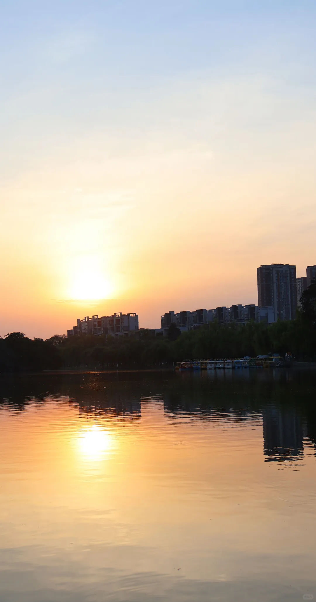

古蜀、园林、街巷与乡野。先选目的地，再把它们连成自己的旅程。
7 处值得停留的地方
从青铜神树到纵目面具，把三千年前的想象慢慢看清。
沿城门、墙体与园林，读一座城市层层叠起的历史。
湖池、文庙与碑刻之间，留一段不赶时间的园林散步。
穿过巷道，找一张竹椅，让一杯茶把旅行的节奏放慢。
看一根面的刀工，尝一盘肉的锅气，读懂广汉的另一种语言。

沿着湖岸走一段，把天光、水面和城市日常收进眼里。
春天向桃花出发，其他时节把目光留给乡间与地方餐桌。
暂时没有匹配的地点，换个关键词，或选择“全部”。
雒城与房湖合并走，黑塔街单独转场，连山另留半日。空间示意帮助认识地点，具体道路请使用实时导航。
3–5 小时
春看桃花，夏游湖岸，秋逛街巷，冬读古蜀。花期请以当年消息为准。
桃花是连山的春日主题。先确认当年花期，再把乡间步道与地方餐桌安排成半日。
白天留给展厅与休息，气温合适时再去金雁湖水岸。避开正午暴晒，留意降雨。
把城市散步和茶馆放在同一天。看店招、院坝与来往行人，给旅行留一段自在的午后。
先在展馆里看古蜀，再到餐桌边看当代手艺。金丝面的细与回锅肉的厚，都是地方生活的温度。
在人像、鸟形与神树之间，观察古蜀人如何描绘自己的世界。考古发现提供线索，也留下值得继续追问的问题。
从铭文汉砖与城墙遗存出发，把宏大的历史落到材料、尺度与具体的空间里。
房湖把湖池、文庙与碑刻连在一起。沿着开放步道慢慢走，看看城市怎样记住自己的历史。
走进黑塔街的巷道，坐在茶席边，再尝一碗面。看得见的手艺和日常，让旅行有了自己的记忆。
读一段故事，留一枚印章。把想去的广汉，慢慢收进这一册。
印章只保存在这台设备的浏览器中，记录阅读，不代表实际到访。
可以问我“一天怎么玩”“三星堆怎么预约”，也可以让我介绍正在看的这一页。
站内资料问答 · 在浏览器内匹配，不保存提问。实时票务、班次与花情请查官方信息。